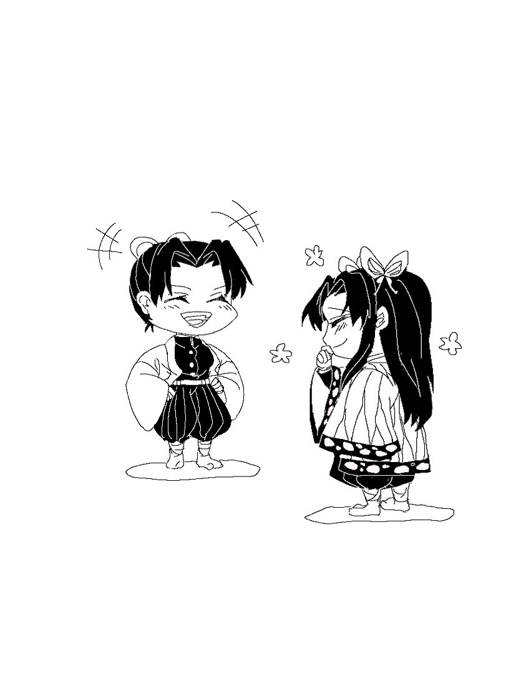

《良藥苦口》
「富岡君，身體狀況如何？」
進入富岡療養間的香奈惠向他招呼道。
富岡則有別於平常的面無表情，眉頭深鎖，咬著牙關，死盯著手上的茶碗。
「是今天中午該吃的藥嗎？」難得看見富岡臉上有了表情，「有什麼問題嗎？」
「⋯⋯沒有。」
茶碗裡盛滿深色的液體，散發著濃厚的藥草味。
即使用聞的，也不是讓人很舒服。
「富岡大人，麻煩盡快服藥吧。」
葵在一旁站著，因為忍特別吩咐她要看好富岡乖乖吃藥。
只是每次的吃藥時間，富岡總是一副很痛苦的樣子。
「───」
像是做好覺悟一般，富岡深吸一口氣，湊近嘴一口氣灌下藥湯。
「唔噁⋯⋯」
富岡的眉頭幾乎打結在一起，忍不住發出了含糊不清的喉音。
即使做好心理準備，這藥的味道仍然是言語無法形容的⋯⋯苦。
（吃個藥有這麼難受嗎⋯⋯？）
看著富岡那彷彿被千刀萬剮的表情，葵覺得這個人也太誇張。
不就是吃藥而已嗎，又不是小孩子。
而剛剛進房的香奈惠，見富岡如此慘樣，心中也不禁犯疑。
「這個藥⋯⋯」她拿起富岡喝過的茶碗，裏頭尚留了一點點的藥湯。
她捧起碗聞了聞，微微蹙眉。
「葵，這個藥是你煎的嗎？」香奈惠向旁邊的少女問道。
「咦？是的⋯⋯」對於突然被詢問，葵有點驚訝「稍早的時候，忍大人拿給我的。」
「忍給你的藥方？」
「是，富岡大人的藥都是忍大人調配的。」
香奈惠微一沉吟，放下了茶碗。
「那、那個，是不是我哪裡弄錯了？」見香奈惠露出認真沉思的樣貌，葵開始緊張起來。
「不，沒什麼。你不用害怕。」香奈惠恢復成平時的笑顏，「葵沒有出錯喔。」
「是、是嗎⋯⋯」聽到香奈惠這麼說，葵繃緊的神經總算放鬆了點。
「胡蝶⋯⋯」
兩個女孩討論藥的事正投入，差點忘了富岡也在一旁聽著。
「啊、怎麼了，富岡君？」香奈惠轉向他，微笑道「藥沒問題，別擔心。」
「我一定得吃這麼苦的藥嗎⋯⋯？」
「哎呀。」
香奈惠伸出食指輕輕揮了揮。
「人家不是說良藥苦口嗎？愈苦的藥表示療效愈好喔。」
「！！」富岡難得露出了深受打擊的臉色。
「要相信配藥的人都是全心全意為了病患的身體著想喔。」香奈惠柔聲道，「不然就辜負人家的一片心意了。」
＊＊＊
對富岡的探視結束後，香奈惠走到藥草的儲藏間。
「你在這裡啊。」
往裡面的儲物架一探，果然是忍。
拿著一張條例配方的紙條在手上，她準備抓藥。
「姐姐？」忍放下手邊的工作，「你怎麼過來了？」
「我只是有點好奇。」
「好奇？」
香奈惠指了指忍手中的字條。
「能讓我看一下嗎？」
「唔⋯⋯」
察覺姐姐似乎發現了什麼事，忍有點忸怩，但還是交出了字條。
香奈惠目光掃過上面列出的幾味藥材，然後將注意力停在了其中一種。
「啊啦啊啦。」香奈惠抬首，「忍，這是⋯⋯」
「⋯⋯.沒什麼關係吧。」忍不敢正眼看姐姐，「反正那個藥材也是吃身體健康的。」
「是沒錯啦......」香奈惠無奈的笑笑，「不過這藥，味道不太討喜啊，放得是有點多了。」
「⋯⋯富岡先生跟你說的？」
畢竟這藥也吃幾天了，可能剛好姐姐過去遇到正在服藥的富岡先生，就被這麼抱怨了吧？
「是啊，所以別再放這麼多了。」
「⋯⋯我只是想捉弄他一下而已。」忍搔搔臉，「既然姐姐都這麼說了，我就稍微放過他吧。」
「嗯嗯。啊、不過⋯⋯」
香奈惠似乎又覺得哪裡不妥。
「都吃這麼多天了，再改味道的話，可能會被富岡君發現之前的藥有問題呢。」
「也對呢⋯⋯」
忍交叉抱臂，香奈惠手指抵著下巴，稍作幾秒思考後——
兩人像是同時得到了結論，相視頑皮一笑。
「就這樣吧。」
「嗯，也只能這樣了。」
可憐的富岡，明日依舊繼續得服用忍的特別藥方。
「對了，姐姐。」
「嗯？」
「富岡先生的表情如何？」
「這個啊⋯⋯」
香奈惠笑得可開懷了。
「很有趣喔，有機會的話忍去看看吧。」
